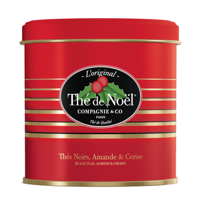
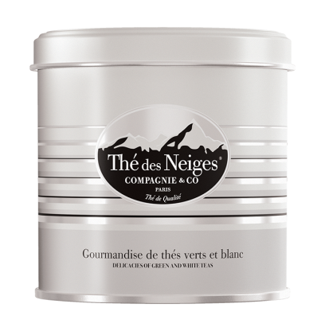
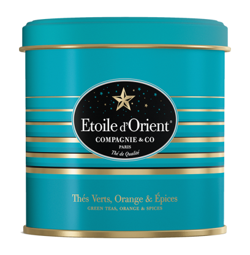
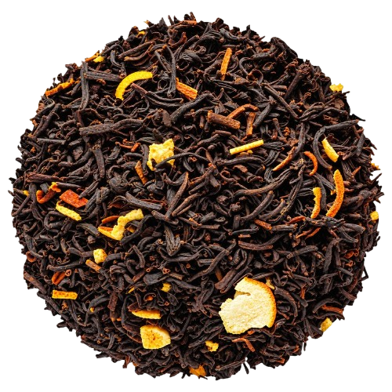
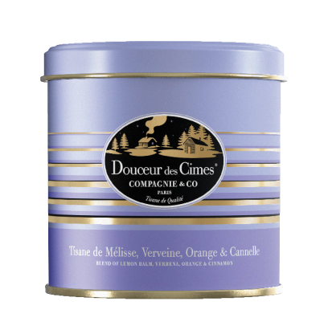
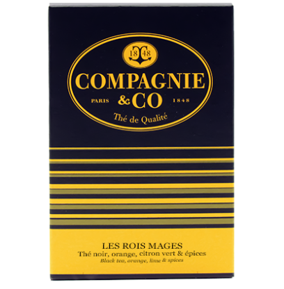
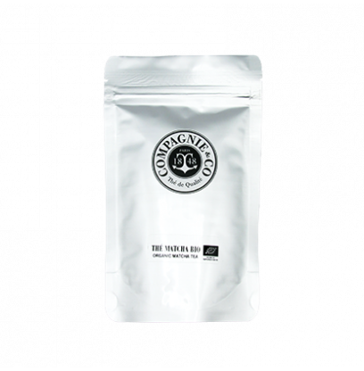

Les Thés de Noël sont arrivés.

Thé de Noël®
Thés noirs de Chine aux saveurs de cerise et d'amande. Format disponible : - Boite métal - Berlingot 25 sachets - Vrac

Thé des Neiges®
Mélange de thés blancs et de thés verts aux arômes de pomme cuite et de fruits rouges. Format disponible : - Boite métal - Berlingot 25 sachets - Vrac

Etoile d'Orient®
Thés verts aux saveurs d'orange, d'épices et de chocolat. Format disponible : - Boite métal - Berlingot 25 sachets - Vrac

Spécial Noël
Thé noir au Citron, Clou de girofle et nougatine aromatisé Orange, Caramel, Mandarine et Cannelle. Format disponible : - Vrac

Douceur des Cimes®
Tisane de Noël : orange & cannelle. Format disponible : - Boite métal - Berlingot 25 sachets - Vrac

Les Rois Mages
Thé noir, orange, citron vert et épices. Format disponible : - Berlingot 25 sachets
Le Matcha Bio est de retour.

Matcha Bio.
Provient d’un mélange de 2 thés verts Aracha et Tencha récoltés dans le sud du Japon dans la préfecture de Kagoshima. Le super aliment antioxydant par excellence en provenance du Japon. Nos produits sont certifiés BIO par ECOCERT. Format disponible : - Doypack 50grs - Vrac